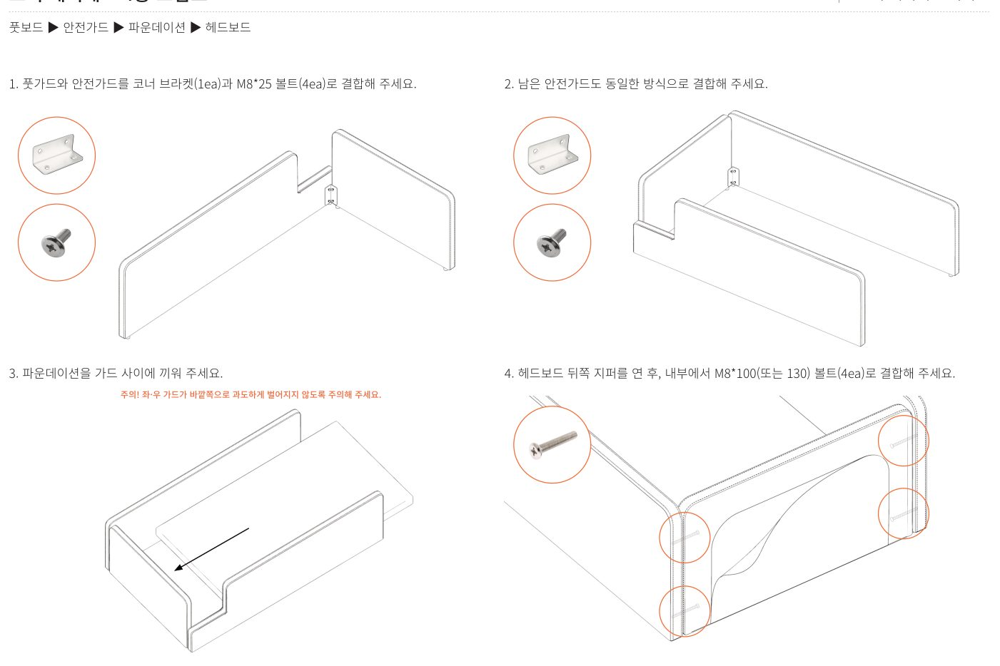
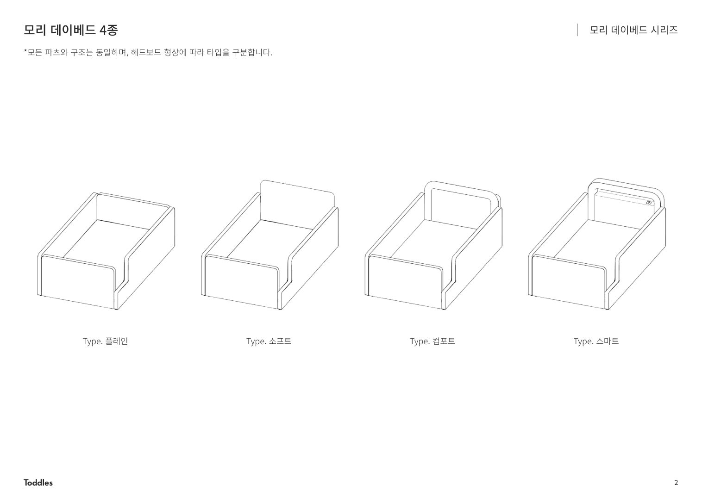
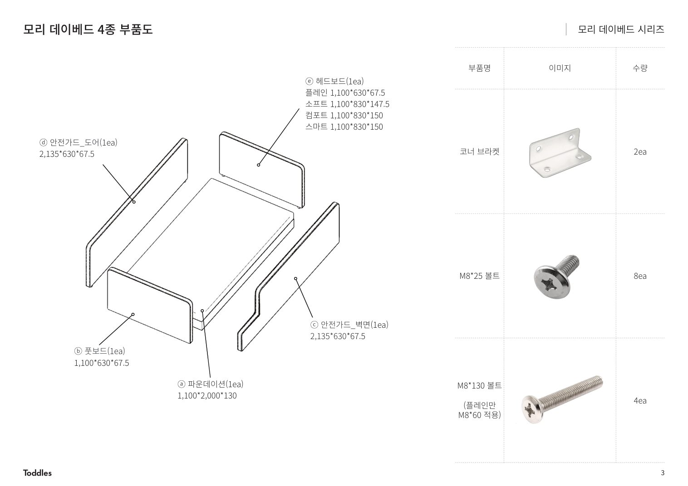
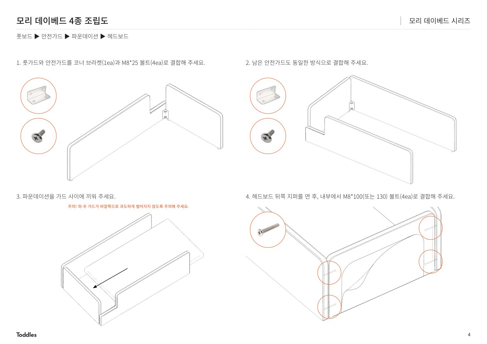
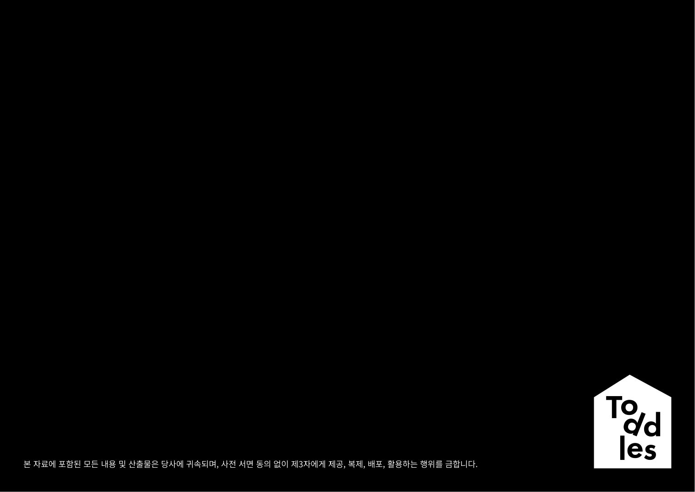

4가지 타입 비교
구조는 동일, 헤드보드의 두께와 형상만 다릅니다.
플레인
소프트
컴포트
스마트
부품 리스트
| 부품 | 스펙 | 수량 |
|---|---|---|
| ⓐ SS 파운데이션 | 1,100 × 2,010 × 130 | 1 ea |
| ⓑ 풋보드 | 높이별 (높음 845 / 낮음 295) | 1 ea |
| ⓒ 안전가드협 또는 사이드협 | 2,160 × 70 × 845 또는 295 | 1 ea |
| ⓓ 반대편 안전가드협 | 위와 동일 | 1 ea |
| ⓔ 헤드보드 | 타입별 (위 표 참조) | 1 ea |
| ⓕ 벨크로 덮개 | 225 × 360 | 2 ea |
| ⓖ 푹잠가드 | 990 × 550 × 20 | 1 ea |
| M8 무두볼트 | 8 ea | |
| M8 육각너트 | 8 ea | |
| M6 × 20 볼트 | 12 ea | |
| L자형 브라켓 | 6 ea | |
⚠️ 필수 공구
풋보드·헤드보드 내부에서 M8 육각너트를 결합해야 합니다. 너트 비트(소켓)를 반드시 지참하세요. 일반 드라이버로는 작업 불가.
설치 단계
조립 순서: 사이드협 / 안전가드협 → 풋보드 → 파운데이션 → 헤드보드
-
사이드협에 M8 무두볼트 결합
사이드협(또는 안전가드협) 한 쪽 끝에 M8 무두볼트 2개를 결합합니다.

M8 무두볼트 2ea -
풋보드 지퍼 → 내부에서 너트 체결
풋보드 후면 지퍼를 열고, 내부에서 M8 육각너트 2개로 사이드협과 결합합니다.
⛔ 너트 비트 필수손으로는 충분히 조여지지 않아 흔들림이 발생합니다. 반드시 너트 비트 사용.
-
반대쪽 사이드협도 동일하게 결합
반대편 사이드협을 같은 방식으로 풋보드에 연결합니다.
-
파운데이션 끼우기
SS 파운데이션을 좌·우 가드 사이에 끼웁니다.
⚠️ 가드 벌어짐 주의좌·우 가드가 바깥쪽으로 과도하게 벌어지지 않도록 한 명이 잡아주는 상태에서 끼워주세요. 패브릭이 늘어날 수 있습니다.
-
헤드보드 결합
헤드보드 뒤쪽 지퍼를 열고, 내부에서 같은 방식으로 사이드협을 M8 육각너트 2개로 결합합니다.
사이드협 ─ M8 무두볼트 ─ 헤드보드 내부 너트 -
L자 브라켓 + M6 볼트 마감
풋보드 / 헤드보드 / 안전가드협 / 사이드협을 파운데이션과 L자형 브라켓(6개) + M6×20 볼트(12개)로 마감 결합합니다.
L자 브라켓 6ea M6×20 12ea✓ 마지막 단계푹잠가드(ⓖ)를 매트리스 위에 올리고, 벨크로 덮개(ⓕ 2ea)로 양쪽 끝을 고정하면 완성.
유아 안전 체크리스트
인계 전 필수 확인
- 모든 볼트·너트가 끝까지 조여졌는지 (흔들림 0)
- 안전가드와 매트리스 사이 틈이 4cm 미만
- 푹잠가드가 매트리스 측면을 완전히 가리는지
- 벨크로 덮개로 사이드 마감 처리 완료
- 고객님께 너트 풀림 시 즉시 재조임 안내
📐 전체 원본 도면 (PDF)
각 단계 위 이미지가 작거나 자세히 보고 싶을 때는 아래 페이지를 클릭하여 확대하세요. (총 5 페이지)



